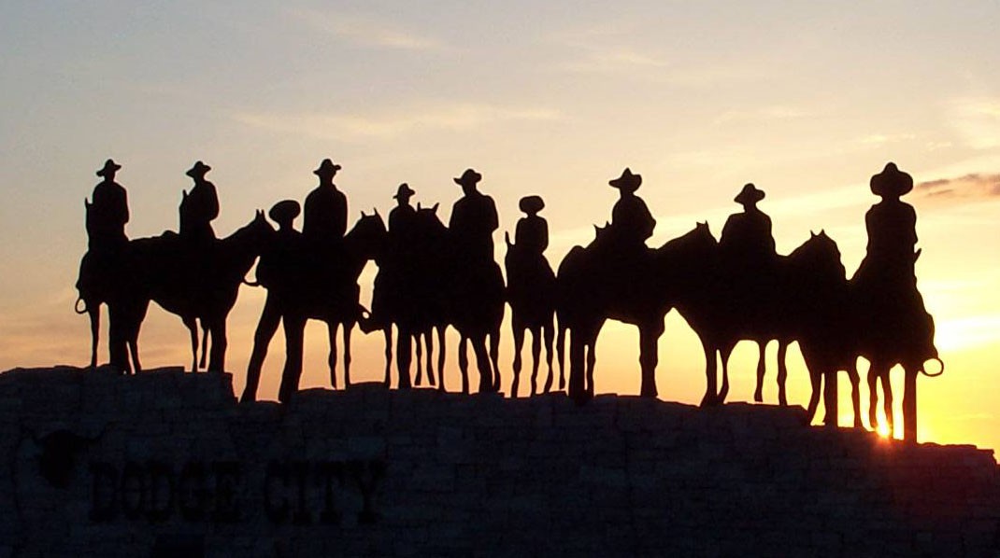

Welcome
Horse Sanctuary focuses on finding homes for abused and neglected horses. We have rescued over 1,000 horses since we first opened and found homes for more than half that number. As for the unfortunate horses that cannot find a home due to their age, we are looking for sponsors that can help with donations.
Our Staff Members
(Felipe Flores, Paola Flores, Vanessa Flores, Reyna Flores, Maria Flores, Jonathan Cuevas, Luis Millan, Celestino Millan, Andy White and Samuel Miller.)